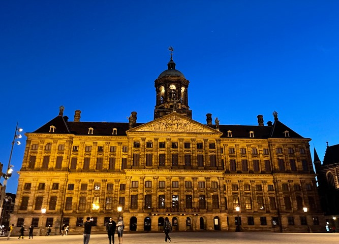
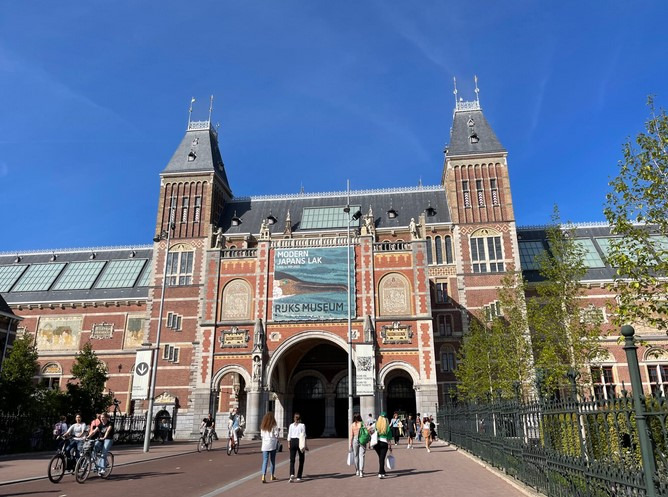
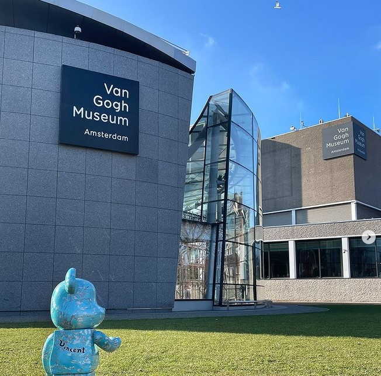

2025年4大人生必去夢想旅遊目的地
荷蘭 阿姆斯特丹
阿姆斯特丹王宮是阿姆斯特丹市中心的一座巴洛克風格的宮殿，位於大廣場（Dam Square），是荷蘭國王的官邸之一。阿姆斯特丹王宮的歷史可以追溯到17世紀，當時這座建築物被用作阿姆斯特丹市政廳，直到1808年拿破崙的弟弟路易斯·波拿巴（Louis Bonaparte）成為荷蘭國王，並將其轉變為皇家宮殿。此後，它一直是荷蘭皇家家族的住所和國家重要場合的舉行地。但是後來荷蘭皇家搬到海牙，而阿姆斯特丹王宮轉為皇室接待重要來客的地方，如果平時王宮沒有活動的話，就會對遊客開放。

如果你喜歡文化藝術的話，就一定不能錯過每個國家擁有大量富有文化歷史意義藏品的國家博物館。荷蘭國家博物館位於阿姆斯特丹市中心南面。博物館收藏了大量的荷蘭文化和歷史藝術品，包括藝術品、手工藝品、歷史文物等。荷蘭國家博物館的館藏豐富從史前到近代的藝術品都有，容易一天都逛不完，如果時間不夠的情況下，小編重點推薦去二樓的區域喔！因為二樓是1600-1700 的藏品，正是荷蘭的黃金時期，荷蘭在這時候的商業、金融、科學、藝術等方面都達到了頂峰，人們的富有帶動了藝術品市場，那時候的林布蘭和維梅爾是荷蘭黃金時代繪畫中的代表人物。《夜巡》《倒牛奶的女僕》等都是荷蘭國家博物館最重點要參觀的繪畫作品。。

梵高博物館顧名思義就是收藏了許多梵高的畫作和手稿，展示了他的生平和藝術作品的博物館。梵高的創作離不開他的生活，在他不同的時期，他就有不同的畫風，所以從他的作品中能夠看到他藝術的演變過程。雖然世界上有不少博物館藏有梵高的作品，但是荷蘭的梵高博物館擁有最多的梵高作品，如果想要一睹梵高的作品，就一定不能錯過梵高博物館啦。
